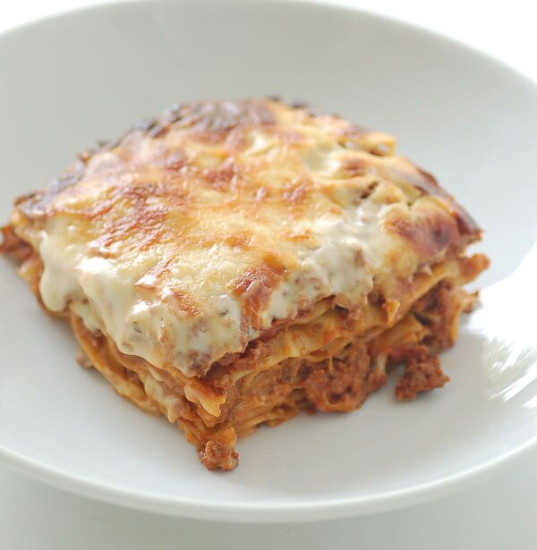

Lasagne

Descrizione
Le lasagne al forno sono costituite da una sfoglia di pasta all'uovo tagliata in fogli grossolanamente rettangolari detti lasagne, le quali, una volta bollite e scolate, vengono disposte in una sequenza di strati, separati da una farcitura che varia in relazione alle diverse tradizioni locali.
Ingredienti
- 300g carne macinata
- Dado di carne
- 50g di cipolle
- Vino Rosso
- 300g di passata di pomodoro
- 200g di Besciamella
- 270g Parmiggiano
- 1 cucchiaio di olio e.v.
- sale q.b.
- pepe q.b
Passaggi
- Ungi una teglia con abbondante burro e crea uno strato iniziando con il ragù, poi la besciamella e poi il Parmigiano
- Crea uno strato più omogeneo possibile, copri con le sfoglie di lasagna e buca le sfoglie con la forchetta. Ti servirà a evitare la formazione di bolle d’aria.
- Continua con un altro strato di sugo, Parmigiano e besciamella,
- Copri con altre sfoglie di lasagna e continua fino a esaurire tutti gli ingredienti ricordandoti di forare con la forchetta man mano.
Tempo cottura
Il tempo necessario è di circa venticinque minuti, ma si divide in due fasi:
- La prima nel ripiano basso del forno, dura per i primi venti minuti a 180° C.
- Dopodiché resta solo da gratinare la crosta in superficie. Dunque, con funzione grill attiva, metti la teglia nel ripiano medio e dopo cinque minuti le tue lasagne saranno perfettamente cotte, morbide all’interno e con una crosticina eccezionale.